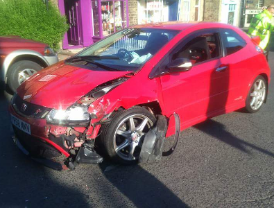

Vaikka auto on yleisesti luotettava, se ei ole täydellinen. Yleisenä tyyppivikana autossa on vaihdelaatikon synkrot. Yleensä toiseen tai kolmanteen vaihteeseen vaihtaessa tulee jossain vaiheessa ongelmia.
Muut suuret ongelmat koskevat suorituskykyä. Auto on hiukan alitehoinen, kun vertaa muihin saman ikäisiin autoihin, joissa oli jo turbon ansiosta noin 30 hevosvoimaa enemmän. Auton etuvetoisuus ja avoin tasauspyörästö vaikeuttaa voiman saamista maahan huonolla säällä. Takajousitus on myös halpa vääntöpalkkijousitus, joka on huomattavasti kehnompi kuin erillisjousitus. Näitä ongelmia korjattiin myöhemmissä malleissa.
